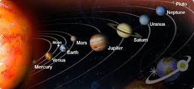

Note: The progress tag is not supported in Internet Explorer 9 and earlier versions.
Display a gauge:
Note: The meter tag is not supported in Internet Explorer or Safari 5 (and earlier versions).
Note: Better use CSS for map, not areas of the picture,/p> 
I am Very
To learn AJAX, you must be familiar with the XML